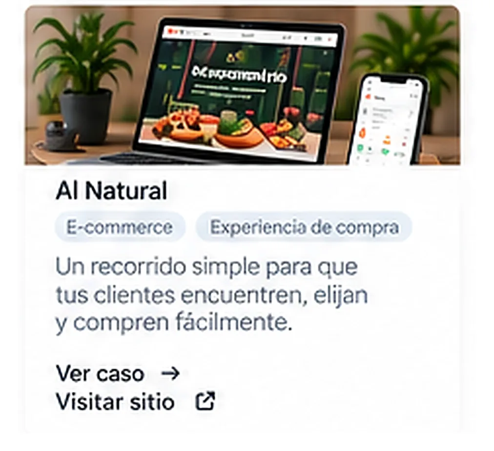
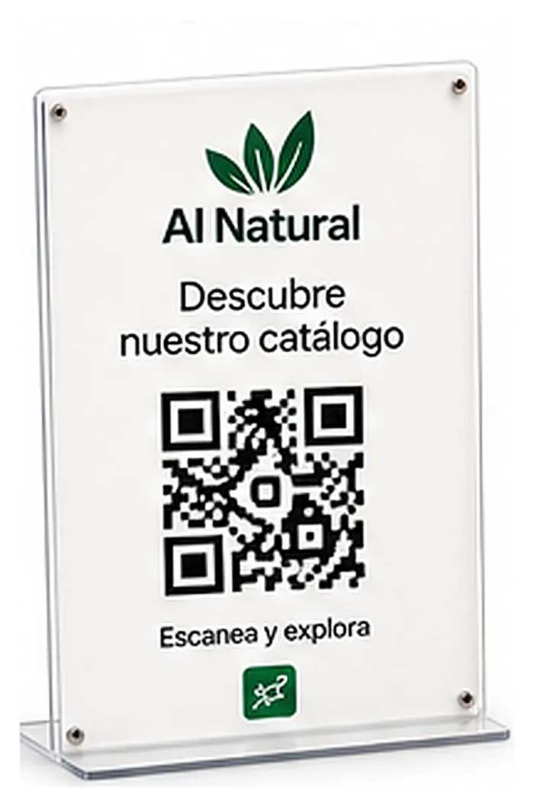

Una experiencia que acompaña al cliente mientras compra.
Diseñamos una experiencia que guía al cliente desde el descubrimiento hasta la compra, mostrando solo lo que puede adquirir en ese momento.

Una tienda con muchas opciones, pero decisiones difíciles.
Al Natural tenía diferentes productos disponibles, pero presentar todo el catálogo en una página obligaba al cliente a leer, buscar y decidir qué agregar. Para una compra de despensa, eso genera fricción.
La solución no era hacer una página más larga o mostrar más productos. Era hacer que la página preguntara y guiara al cliente.
El cliente no tiene que saber qué quiere comprar antes de entrar.
Creamos un recorrido donde el cliente puede entrar y simplemente decir: “Quiero armar mi despensa.” A partir de ahí, el sistema toma el control.
En lugar de cliente → catálogo → leer → buscar → comparar → agregar, el recorrido se convierte en cliente → pregunta → respuesta → producto → agregar → siguiente pregunta.
La disponibilidad forma parte del recorrido.
El sistema no debería mostrarle al cliente simplemente todo lo que existe. Le muestra lo que puede comprar en ese momento.
“El catálogo deja de ser una lista y empieza a comportarse como un vendedor que acompaña.”

El recorrido no termina en la compra online.
El mismo sistema funciona desde el espacio físico. El cliente encuentra un QR en el establecimiento y desde allí puede acceder a diferentes acciones.
Antes de visitar
Explorar → Armar la despensa → Pedir → Recibir
En el establecimiento
Escanear QR → Ver la carta → Pedir → Domicilio → Reservar una mesa

Diferentes momentos, una experiencia conectada.
Antes de visitar el establecimiento, el usuario puede explorar, armar su despensa, pedir y recibir. Mientras está allí, puede escanear un QR, consultar, pedir o reservar. Después puede volver a comprar, solicitar domicilio o volver a interactuar con Al Natural.
Por eso no estamos hablando solamente de un e-commerce. Estamos hablando de un recorrido omnicanal.
Antes
Explorar · Armar mi despensa · Pedir · Recibir
Durante y después
Consultar · Pedir · Reservar · Domicilio · Volver a comprar
No diseñamos un catálogo para que el cliente lo recorra. Diseñamos un recorrido para que el cliente no tenga que recorrerlo.
Una experiencia digital que acompaña al cliente en diferentes momentos y convierte una página web en un asistente de compra y servicio.